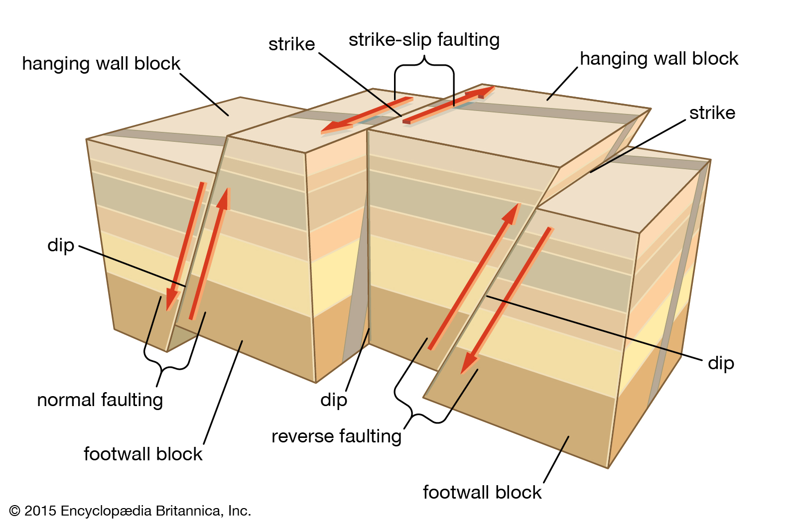

Lecture 2
Earthquakes
The Official Unofficial Earthquake Primer
The Seismic Exam doesn’t require advanced knowledge about earthquakes. That being said, this article will give some background on earthquakes that will set the stage for ASCE 7, but it won’t cover anything extensively. The relevance here is to provide enough context about earthquakes so that seismic engineering can be trusted. The biggest takeaway is the Response Spectrum, explained towards the end.
Causes of Earthquakes
There are several sources of earthquakes. These include:
- Tectonic Plate Movement
- Explosions (Chemical/Nuclear)
- Volcanic Eruptions
- Mine Bursts
Image via Wikipedia
The most relevant source in California would be those earthquakes occurring from tectonic plate movement. The lithospheric plates (the outermost part of the earth) are in motion. So why do they move? Because they are resting on top of a plastic mantle layer that is also in motion. Convection currents form in the mantle because the center of the earth is hotter than the outter layer, so heat difference creates a current that drives the mantle, and subsequently moves the lithospheric plates. You can imagine these giant masses of land pushing around each other in various ways, there must be some impacts from this. One is that plates get stuck against each other, but really want to move! This creates a build up of strain energy, that once released creates a large wave of energy known as an earthquake.
Whose Fault Is It?
Faults are a physical record of earth movements. They can be seen at the earth’s surface when different layers/levels of land appear offset. It’s worth noting that these movements along the earth can happen without surface rupture, so there are still many faults below the earth’s surface that may not be known. The displacement event of faults can be slow and timid, or fast and violent. Faults are also classified by their geometry.

Image via Britannica
- Strike-Slip Fault
- Dip-Slip Fault
- Reverse Fault
Other terminology for describing faults includes strike and dip. The dip of a fault is the angle the fault surface makes with the horizontal. Strike is the angle between the fault line and North
Image via Britannica
Ride the Wave
During an earthquake, seismic waves radiate outwards from the focus point. The focus point is considered the origin point of the waves, and is usually some depth below the earth’s surface. Shallow-focus earthquakes are defined as having a focus depth less than 70 km, which are the predominant type of earthquakes in California. The closer the focus is to the surface, the more violent and destructive the earthquake can be. The other common terminology is epicenter, which is the point on the ground surface directly above the focus.

Image via IRIS edu
There are multiple waves that occur from a seismic event. They are classified as either Body Waves or Surface Waves. Body waves can move through the interior of the earth, Surface Waves only occur on the surface of the earth.
P-waves (compression waves) are the fastest, and move similar to sound waves by spreading outwards. They can travel through both liquids and solids, and they alternatively push and pull the surrounding material.P-waves are typically felt first during an earthquake
S-waves (shear waves) are slower, and as they propogate they shear the rock sideways at right angles to the direction of travel. S-waves cannot move through liquids. The motion of S-waves at the ground surface produces both a horizontal and vertical motion. This is important to realize that there is a vertical motion to earthquakes, not just side to side. S-waves are the most effective in damaging structures, and usually come second after the P-waves. Both P-waves and S-waves can occur below and at the earth’s surface
The last category of waves are known as surface waves, these include Love-waves and Rayleigh-waves. Love-waves are similar to S-waves, however they do not produce vertical displacements. Rayleigh-waves move similar to a rolling ocean wave, moving both vertically and horizontally in a vertical plane at the direction of travel.
Measuring Earthquakes
Earthquake measurements were first done based off human perception. This was useful at the time, but more scientific methods have become the norm as technology and needs have changed. The first intensity scale used to qualitatively describe earthquakes was created by de Rossi of Italy and Forel of Switzerland. It was used in reports that described the intensity of the 1906 San Francisco earthquake. It was based on a scale from one to ten at increasing levels of shaking and damage to structures. The levels were not very scientific, and a need for something that more accurately described the earthquake was fulfilled in 1935 by Charles Richter. Richter created a method for measuring an earthquake’s intensity by defining a magnitude. The magnitude was defined by the log to base ten of the maximum wave amplitude in microns recorded by a specific Wood-Anderson seismograph which had to be located 100 km from the earthquake epicenter. At the time this was a great improvement in scientific measurements of intensity scale for earthquakes, however it has a drawback in that it is based off a specific seismograph instrument that has its own physical period. The Wood-Anderson seismograph amplifies seismic waves within a period range of 0.1 to 2 seconds, so there is some bias in how an earthquake was measured. Another drawback is magnitude saturation, where extremely large earthquakes were under-estimated because the basis of measurement
Today, a more fundamental approach for earthquake measurement is accepted, called Moment Magnitude. Originally defined in the 1970’s by Hiroo Kanamori and Thomas Hanks, the moment magnitude scale derives intensity from the area of fault rupture and distance moved. This effectively measures the work done by the earthquake (known as Seismic Moment), which is a more fundamental measurement of the earthquake energy. This scale is so valuable because it is the only magnitude scale that doesn’t suffer from saturation problems, meaning it can accurately characterize any size earthquake. Similar to the Richter scale, the final magnitude is reported between 1 and 10 via a logarithmic function.
Earthquake Response Spectra
We’ve introduced some basic geological principles and history about earthquakes, but what information is used on a daily basis for practicing engineers? What do we need to understand for the Seismic Exam? One of the most important parts of seismic design is a site specific plot of period vs acceleration. This plot is known as a response spectrum. Period vs acceleration plots are used in determining the seismic force for a structure. The underlying idea is that we pick out a peak ground acceleration from the response spectrum by using the period of our structure as the input. Just find the period of our structure, then get the response spectrum, then record the acceleration corresponding to the period of the structure. It is important to note that a response spectrum is for a site specific location, and depends on a variety of factors. The construction of a response spectrum is done through a series of steps that goes well beyond any practical use for the seismic exam, so it is sufficient to say that historical data, numerical integration, and statistical probability is used in their creation. If needed, the plots will be given on the exam with the question. At least one Response Spectrum will almost certainly show up on the Seismic Principles Exam!

- Frequency = Cycles per Second = 1 / Period = speed/wavelength
- Period = Time to complete a cycle = 1 / Frequency
The first step in understanding the response spectra is knowing the significance of a buildings many periods (T). A typical building structure has several periods. Based off the geometry, mass and stiffness of a structure, it can naturally vibrate at specific frequencies that correspond to unique motions (known as modal shapes). When we say naturally vibrate, this can be thought of by a simple example. Imagine your friend is in a swingset. You pull them back as far as you can, then let go. They start to swing forward and backwards. Eventually because of friction they will stop swinging and return to the center of the swing set. But if you had recorded how long it took them to do a full forward and backwards swing, on average, that would be a measurement of a period. A period is just the amount of time an object takes to repeat a motion. Let’s now put this swing set and friend onto a giant shake table. If you were tasked with setting the shaking speed to get your friend moving, how would you know what to set it as? Well, you’d recall your earlier measurement of the period of your friend’s motion, then set the table to that speed. The period, or frequency of the shake table would cause resonance with the swing set. In essence, the shaking of the floor would match how the swing naturally wants to move. If the shake table was vibrating at a random frequency with no mathematical relationship to the swingset period, then the motion of the swingset would be significantly less.
This is kind of a weird concept that is best illustrated visually. So check out the video below, it shows a great example of how vibrations at a structure’s fundamental period cause resonance motion! The video demonstrates three different single degree of freedom systems with three different fundamental periods. The shaking table starts getting faster and faster, moving back and forth at higher frequencies. As the frequency of the table matches a system’s natural period, that system starts moving sideways. (Sidenote: The word fundamental in this context is kind of redundant, since a single degree of freedom system has only one natural period!)
Determining the first period of a structure is approximated in ASCE 7, but can also be computed exactly for idealized systems. The first three (longest) periods of a typical square building include two side to side motions, and one twisting motion. For many simple buildings, only the fundamental period needs to be calculated because of the design procedure. The fundamental period is also known as the first period, and it is by definition the longest period of the structure. We can reasonably say that the most damaging earthquake vibrations are those that match the building fundamental period.
To see some examples of buildings oscillating at their natural period, check out this external blog post
We’ve established that structural systems are more impacted by waves that match their natural period. So what does that have to do with earthquakes? Earthquakes are not an analog signal with a perfectly defined, uniform period. Earthquakes are a song, with multiple kinds of waves happening at once. We can hear a song and point out the different instruments and what they’re doing, even though the sound waves are all happening at once. Similarly, we can isolate the accelerations of an earthquake for a specific period of interest. This is a very important concept, and serves as the fundamentals for determining peak accelerations at specific periods.
To give background on the equations used to determine peak accelerations, the equation for a SDOF mass subjected to an acceleration is shown below.
SDOF Equation of Motion
ü + 2ζwnu̇ + wn2u = -üg(t)
w = Undamped Natural Frequency
ζ = Damping Ratio
u = Displacement
u̇ = Displacement/time = Velocity
ü = Velocity/time = Acceleration
Period = 2π / w
The above equation is used to solve for the acceleration, displacement, and velocity of a SDOF system. It is used in step 3 below. Everything on the left hand side represents the SDOF system, while the right hand side would be acceleration from a ground motion at time ‘t’.
The damping ratio ζ is a percentage representation of the energy that is lost due to various forms of energy dissipation when an object is vibrated. This is a catch-all for the many different forms of energy loss that can occur in a building unrelated to specific lateral elements deforming. An exact value for dampening is hard to evaluate, so it is usually taken as 5 percent conservatively. If damping didn't exist in our universe, then things could vibrate continuously without additional energy input. For example, when you pluck a guitar string it eventually stops making noise. This is because the input energy is converted over time to noise and friction heat. Similarly a building under acceleration will dissipate some energy through friction of connected parts and material deformations.
Creation of Response Spectra
Ground motions consist of many waves with different frequencies and intensities. In order to get this information into a usable format, there are several steps required. These steps are heavily simplified and summarized below.
- 1. Obtain a ground motion history. This is a graph of time vs acceleration from an actual seismic event
- 2. Select an appropriate damping percentage (typically 5%).
- 3. Set up the equations of motion for a single degree of freedom system (SDOF). An SDOF can only assume motion in one direction, it also has only one period.
- 4. Assume a specific period of the SDOF.
- 5. Solve the equations of motion in step 3 using the assumed period and damping ratio. This actually involves solving the equations for each time step! The inputs would consist of various time increments, and the solution to each equation would be the corresponding acceleration, velocity, or displacement at that point in time. This data can then be plotted as a function of time.
- 6. Record the value of the maximum acceleration across time from step 5. (We can also record the maximum velocity and displacement too!)
- 7. Repeat steps 4 through 6 until a sufficient number of periods and corresponding max values are recorded.
- 8. Graph the recorded period and acceleration values to create the Response Spectra!
In summary, we analyze a SDOF system with a chosen period & damping ratio subjected to a ground motion. The analysis finds a maximum acceleration for the single SDOF system. This gives us a single data point in our response spectra graph (a single period and a single acceleration). Repeat this for enough systems with different periods and we eventually create a full response spectra! We could get into more detail about an elastic versus inelastic response spectra, but suffice to say everything used for the seismic exam and in our studies will be an elastic response spectra (this just means the SDOF system used to determine peak acceleration was assumed to never yield).
Additional Links
If you’re interested in learning a little bit more about the background of some of the things mentioned above, check out these links: